Ajayconnect - Government Scheme Coordination Platform
Gov Platform
Coordination
Monitoring
Fund Utilization
Overview
Ajayconnect is designed for better coordination, monitoring, and fund utilization across government Ajay schemes. The product connects state teams, center teams, and agencies through role-specific dashboards for clear execution tracking.
Problem Statement
Government scheme execution often gets fragmented across departments, resulting in delayed reporting, low visibility, and inconsistent use of allocated funds.
- Hard to monitor progress across multiple levels.
- Lack of single source of truth for status and utilization.
- Manual reporting causes delays and data mismatch.
Design Goals
- Create clean dashboards for different user roles.
- Improve visibility of scheme progress and bottlenecks.
- Make fund tracking easier and more actionable.
- Support faster decision-making through clear data hierarchy.
Final Design Screens
Login
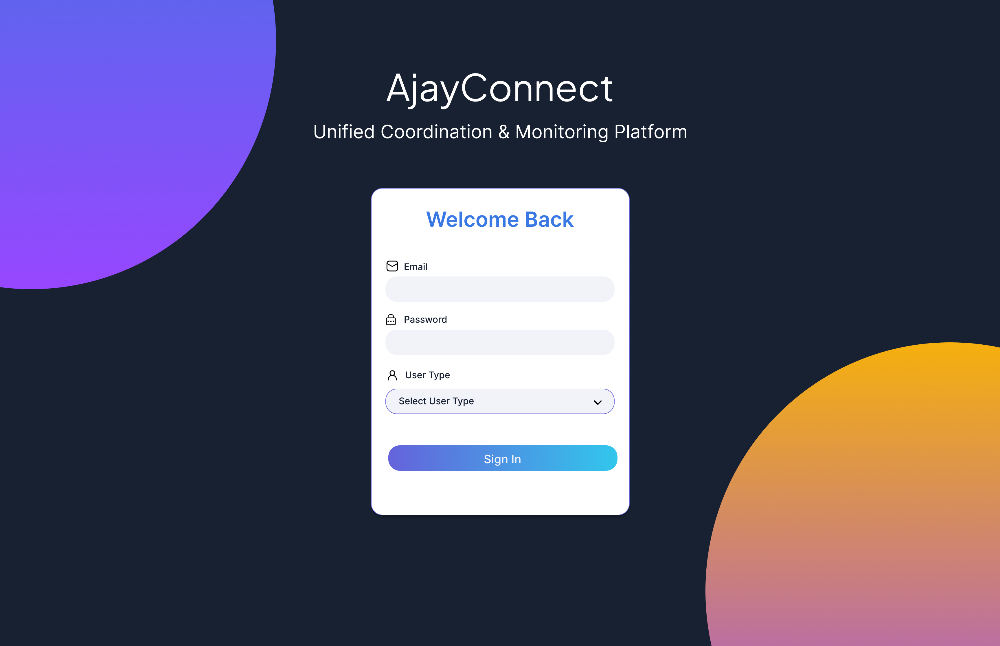
State Dashboards
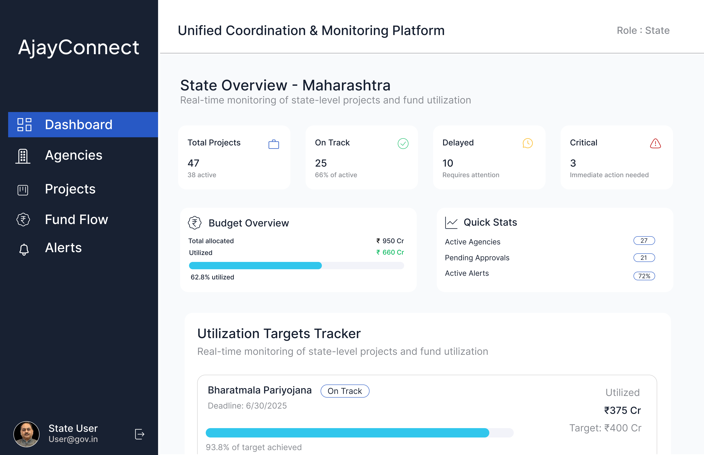
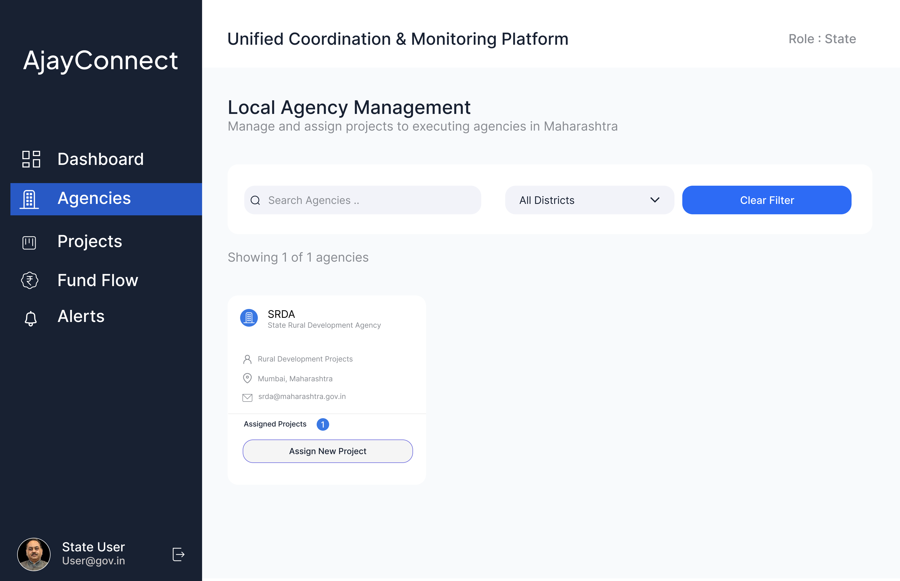
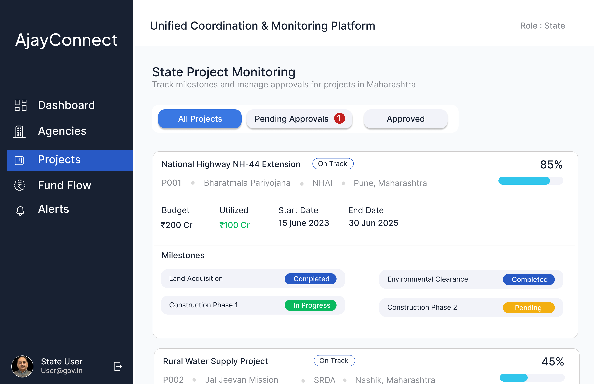
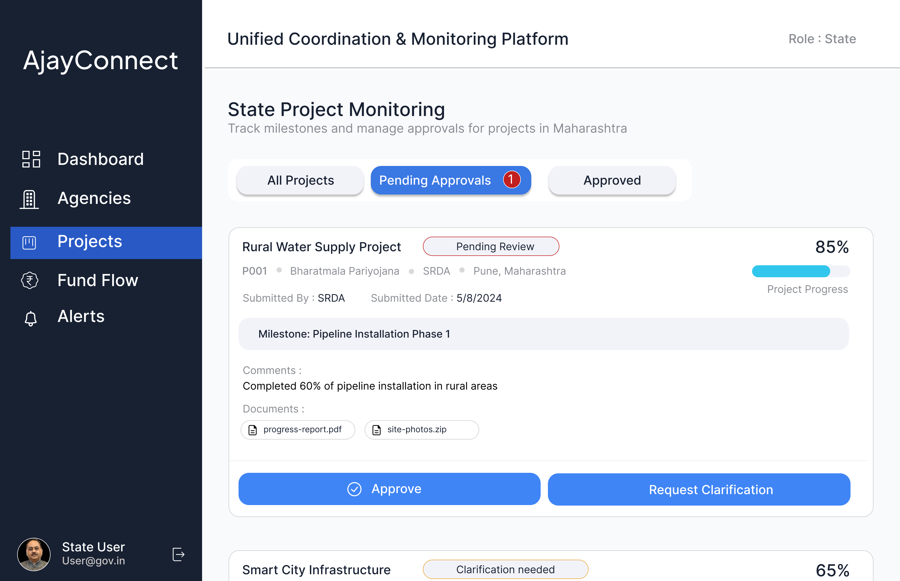
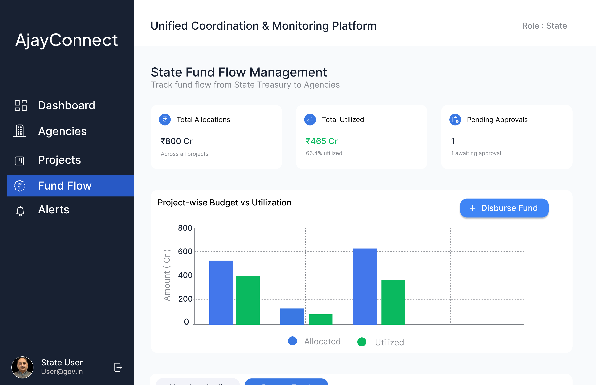
Center Dashboards

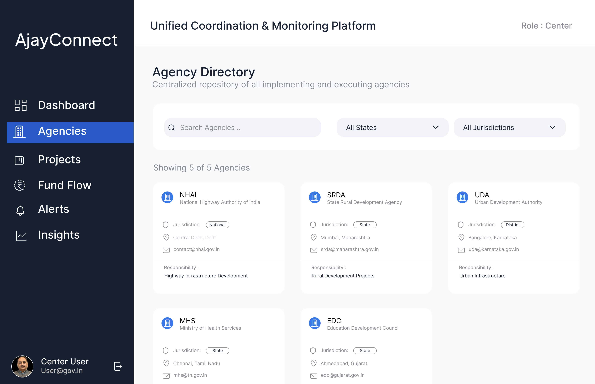
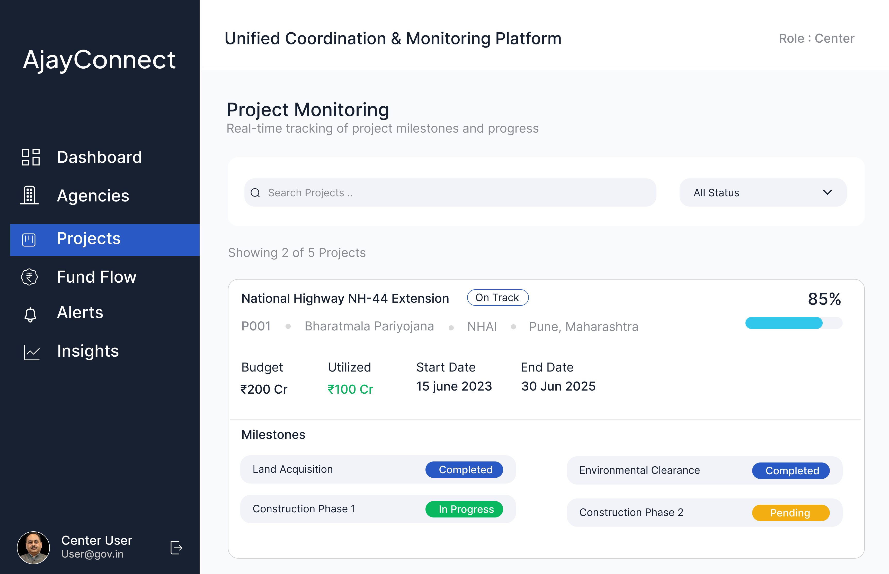
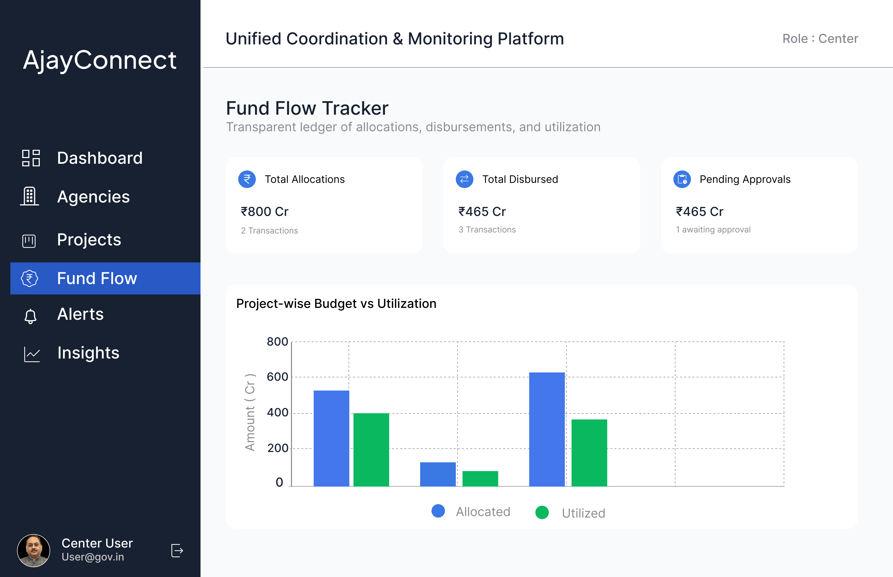
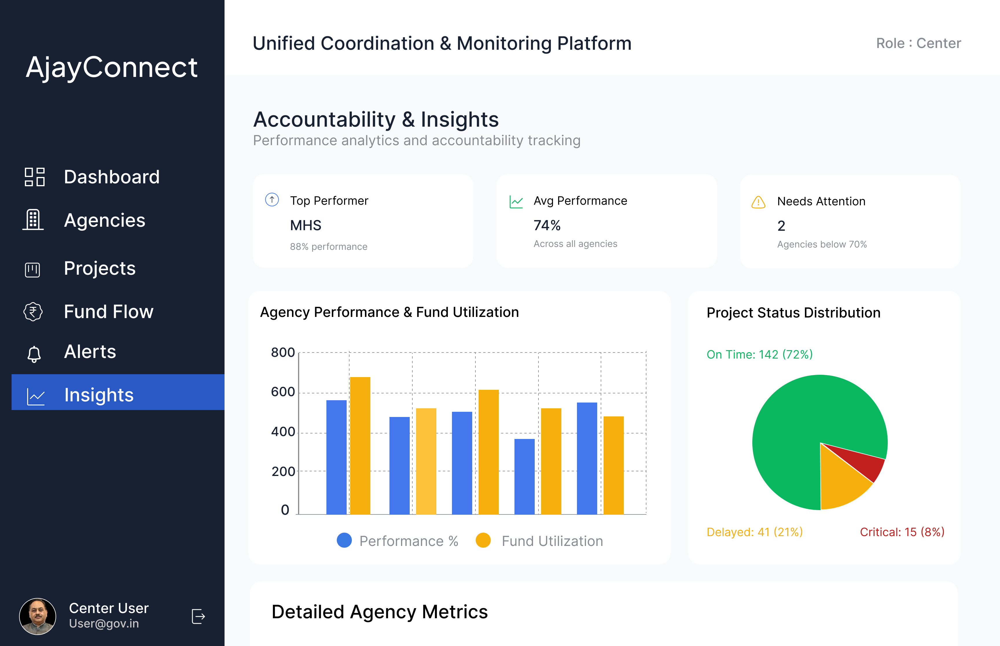
Agency Dashboards
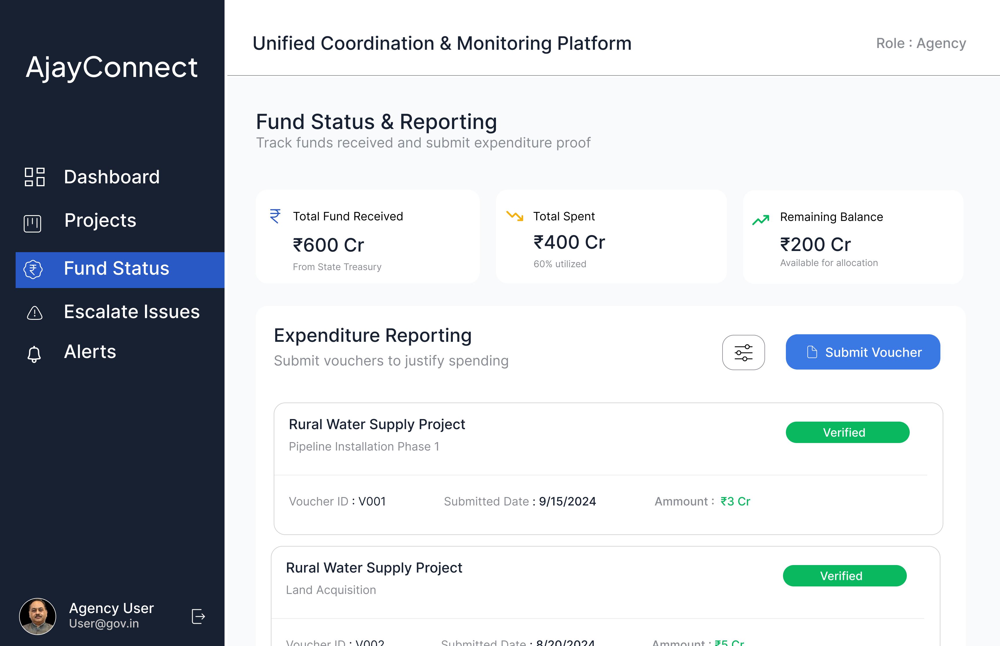
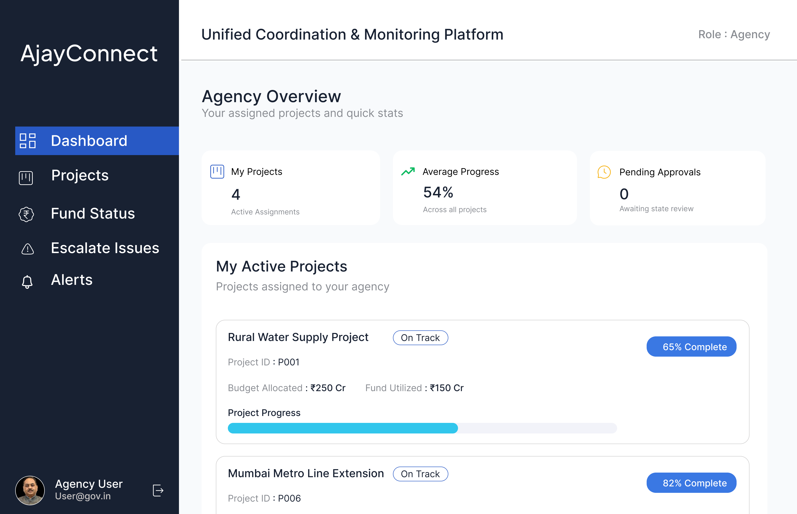
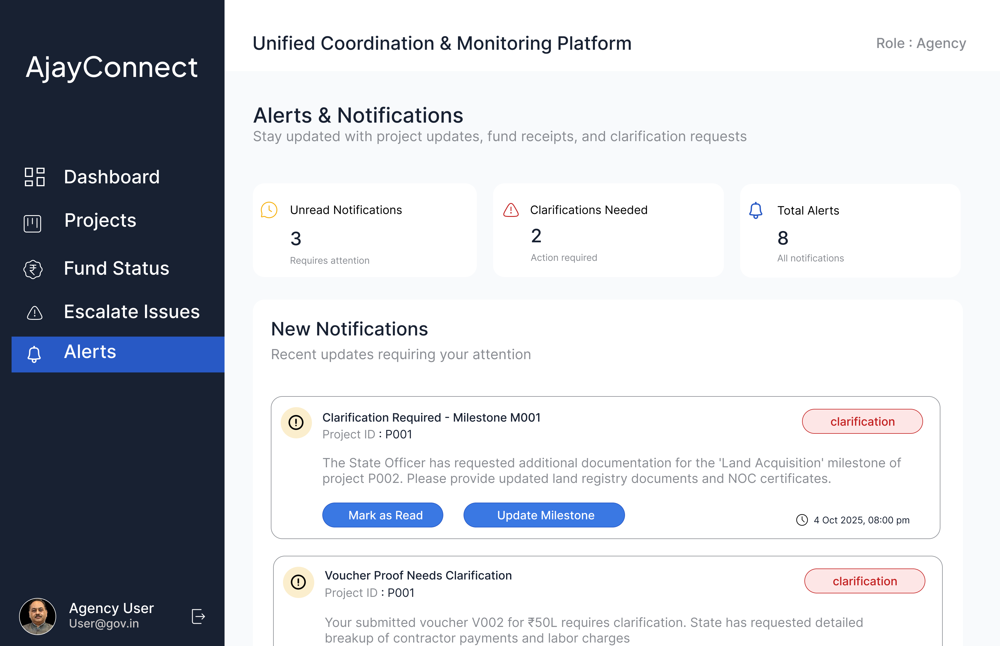